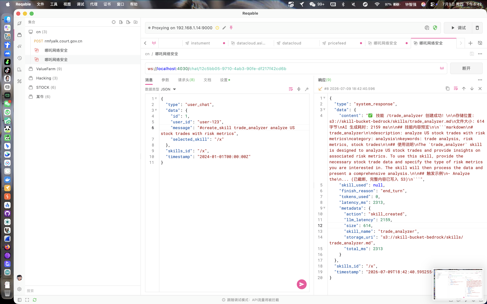
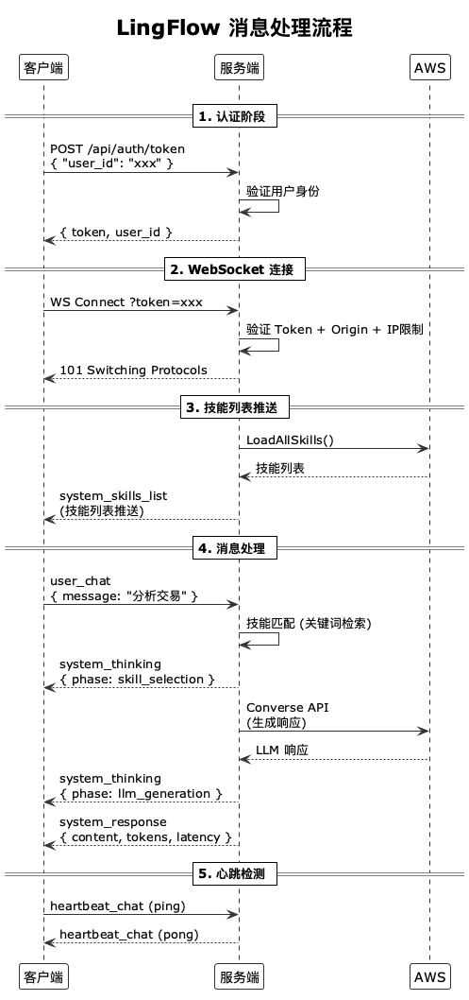

WebSocket 协议
LingFlow 通过 WebSocket 实现客户端与服务端的全双工实时通信。连接建立后，服务端自动推送可用技能列表，客户端发送用户消息后通过流式消息接收 AI 思考过程与最终响应。所有消息均以 JSON 编码，统一封装在 WSMessage 结构中。
连接地址
WebSocket 端点路径为 /chat/{会话ID}，认证令牌通过 token 查询参数传递。开发模式使用 ws:// 明文协议，生产模式必须使用 wss:// 加密协议。
# 开发模式
ws://localhost:4030/chat/{会话ID}?token={认证令牌}
# 生产模式
wss://your-domain.com/chat/{会话ID}?token={认证令牌}消息类型总览
LingFlow 定义了 6 种消息类型，覆盖用户输入、AI 响应、系统通知与心跳保活。其中 heartbeat_chat 为双向消息，其余消息方向固定。
| 消息类型 | 方向 | 说明 |
|---|---|---|
| user_chat | C -> S | 用户聊天消息 |
| heartbeat_chat | 双向 | 心跳 Ping/Pong |
| system_chat | S -> C | 系统通知（错误、状态） |
| system_thinking | S -> C | AI 思考过程（流式） |
| system_response | S -> C | AI 最终响应 |
| system_skills_list | S -> C | 可用技能列表（连接后推送） |
WebSocket 协议图
下图展示客户端与服务端之间的完整交互流程，包括连接建立、技能列表推送、用户消息、思考过程流式输出与最终响应。

消息处理流程
用户消息进入服务端后，依次经过技能匹配、LLM 调用与响应组装三个阶段，每个阶段均通过流式消息回传状态，确保前端可实时渲染思考过程。

客户端 -> 服务端消息
用户聊天消息 (user_chat)
用户在聊天界面输入文本后，客户端封装为 user_chat 消息发送。可选字段 selected_skill 允许用户手动指定技能标识符，跳过自动匹配流程。
{
"type": "user_chat",
"data": {
"id": 1,
"user_id": "user-123",
"message": "检测这个系统的安全漏洞",
"selected_skill": "/vulnerability_scanner"
},
"timestamp": "2026-07-09T10:30:00Z"
}| 字段 | 类型 | 说明 |
|---|---|---|
| data.id | int64 | 消息唯一 ID |
| data.user_id | string | 用户 ID |
| data.message | string | 用户消息内容 |
| data.selected_skill | string | 用户手动选中的技能（可选，如 /vulnerability_scanner） |
心跳消息 (heartbeat_chat)
客户端定期发送 ping 心跳以保持连接活跃，并携带随机 nonce 供服务端原样回传，用于计算往返延迟。
{
"type": "heartbeat_chat",
"data": {
"action": "ping",
"nonce": "abc123",
"timestamp": "2026-07-09T10:30:00Z"
},
"timestamp": "2026-07-09T10:30:00Z"
}服务端 -> 客户端消息
技能列表推送 (system_skills_list)
WebSocket 连接建立后，服务端自动推送一次完整的可用技能列表。当技能通过 #create_skill 新增或更新时，服务端会向所有在线连接重新广播该消息。
{
"type": "system_skills_list",
"data": {
"skills": [
{
"skill_identifier": "/vulnerability_scanner",
"skill_display_name": "漏洞扫描",
"skill_description": "检测系统漏洞和安全威胁",
"skill_category": "security",
"search_keywords": ["漏洞", "扫描", "安全", "威胁", "检测"]
}
],
"total": 1,
"source": "s3",
"updated_at": "2026-07-09T10:30:00Z"
},
"timestamp": "2026-07-09T10:30:00Z"
}系统思考 (system_thinking)
system_thinking 消息按 phase 字段区分阶段。skill_selection 阶段携带技能匹配候选与最终选中技能；llm_generation 阶段表示已进入大模型调用环节。前端可据此渲染实时思考面板。
技能匹配阶段：
{
"type": "system_thinking",
"data": {
"phase": "skill_selection",
"skill_matches": [
{
"skill_identifier": "/vulnerability_scanner",
"skill_display_name": "漏洞扫描",
"match_score": 0.95,
"skill_category": "security"
}
],
"selected_skill": {
"skill_identifier": "/vulnerability_scanner",
"skill_display_name": "漏洞扫描",
"match_score": 0.95,
"skill_category": "security"
},
"thought": "正在匹配用户查询与可用技能..."
},
"timestamp": "2026-07-09T10:30:01Z"
}LLM 生成阶段：
{
"type": "system_thinking",
"data": {
"phase": "llm_generation",
"thought": "正在调用 Bedrock 生成响应..."
},
"timestamp": "2026-07-09T10:30:02Z"
}系统响应 (system_response)
AI 完成生成后，服务端发送 system_response 消息携带最终内容、所用技能、结束原因与统计指标。该消息标志一次对话回合结束。
{
"type": "system_response",
"data": {
"content": "这是你的漏洞扫描结果...",
"skill_used": {
"skill_identifier": "/vulnerability_scanner",
"skill_display_name": "漏洞扫描",
"match_score": 0.95,
"skill_category": "security"
},
"finish_reason": "end_turn",
"tokens_used": 150,
"latency_ms": 2500
},
"timestamp": "2026-07-09T10:30:03Z"
}心跳响应 (heartbeat_chat)
服务端收到 ping 后立即回传 pong，原样返回 nonce 并附加 latency 字段（服务端处理耗时，单位毫秒）。
{
"type": "heartbeat_chat",
"data": {
"action": "pong",
"nonce": "abc123",
"timestamp": "2026-07-09T10:30:00Z",
"latency": 50
},
"timestamp": "2026-07-09T10:30:00Z"
}系统通知 (system_chat)
system_chat 用于推送错误或状态通知，例如功能未启用、配额超限等。前端依据 event 字段决定提示样式。
{
"type": "system_chat",
"data": {
"event": "skill_creation_disabled",
"message": "#create_skill 功能未启用..."
},
"timestamp": "2026-07-09T10:30:00Z"
}WSMessage 结构定义
所有 WebSocket 消息统一封装为 WSMessage 结构。Data 字段使用 json.RawMessage 延迟解析，便于服务端按 Type 分发后再反序列化为具体载荷。SkillsId 用于在技能创建流水线中追踪事务上下文。
type WSMessage struct {
Type MessageType `json:"type"`
Data json.RawMessage `json:"data"`
SkillsId string `json:"skills_id"`
Timestamp time.Time `json:"timestamp"`
}
消息类型通过 MessageType 别名定义为字符串常量，便于在 switch 分发与 JSON 序列化中统一引用：
const (
UserChat MessageType = "user_chat"
SystemChat MessageType = "system_chat"
SystemThinking MessageType = "system_thinking"
SystemResponse MessageType = "system_response"
SystemSkillsList MessageType = "system_skills_list"
HeartbeatChat MessageType = "heartbeat_chat"
)Data 采用 json.RawMessage 而非 interface{}，避免预先反序列化带来的性能开销，同时保留原始字节以便日志排查与二次解析。